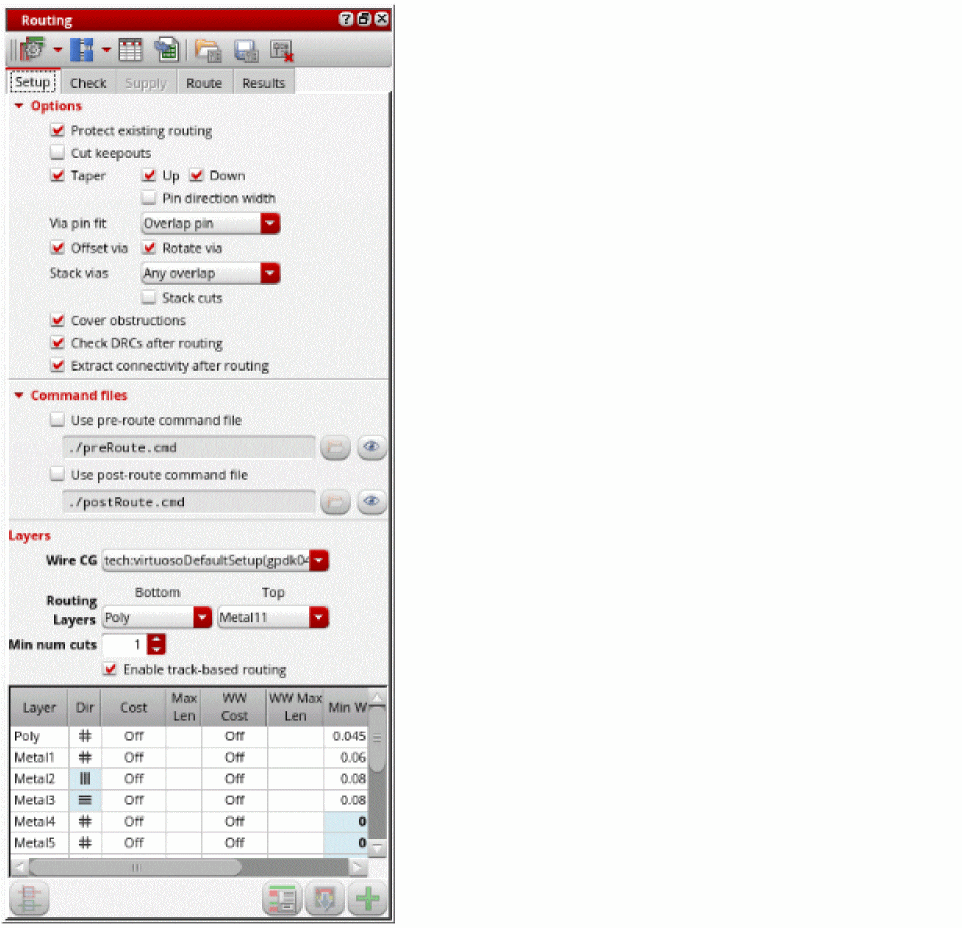

Configuring Chip Assembly Routing Settings
Before running the chip assembly router, you need to specify the, you can specify the various routing options made available in the Routing assistant for chip assembly routing. To configure router settings:
- Open the required design in Layout MXL.
-
Choose Window – Assistants – Routing.
Alternatively, right-click anywhere on the layout window menu bar and choose Assistants – Routing.
The Routing Assistant appears. -
Select Chip Assembly from the Change routing type drop-down list.
 - In the Setup tab, Select Protect existing routing to protect any existing routing in the design.
- Select Cut keepouts to specify whether the blockages should be cut out for pin access.
- Select Taper to specify how the router should connect to pins, Taper Up and Taper Down.
- Specify how a via should fit on pins and how vias are stacked. The available options are: Any fit, Overlap Pin, Via Within pin, and Centered.
- Select Offset vias to allow offset vias to the wires. The vias can either be square or rectangular.
- Specify an option to align stacked vias at the center point. The available options are: Do not use, Any Overlap, and Exact.
- Select Stack cuts to stack vias allowing cut shapes to overlap or space via cuts according to the inter-layer cut clearance rule. This option is available only if the Stack option is set to Any overlap.
- Select Cover obstructions to consider the cover obstruction information in the design. This information is created by the Cover Obstruction Manager.
- Specify the pre-route and post-route command files to be run before and after running the router in the Use pre-route command file and Use post-route command file fields.
- Set the routing layer range using the Bottom and Top drop-down lists.
- Specify the minimum number of cuts in the Min num cuts field.
- Select Enable track-based routing to enable routing with track patterns.
-
Change the layer direction, cost, minimum width, minimum spacing, maximum length, and maximum width of the routing layer in the Layers table.
Once the router settings are configured, you can run the pre-routing check.
Related Topics
Routing Assistant User Interface for Chip Assembly Routing Flow
Checking Layout Routability in Chip Assembly
Viewing and Analyzing Chip Assembly Routing Results
Return to top